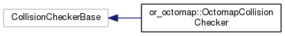
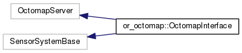

Main Page
Namespaces
Classes
Files
Class List
Class Hierarchy
Class Members
Class Hierarchy
Go to the textual class hierarchy


or_octomap_plugin
Author(s): Yan Yu
autogenerated on Tue Oct 24 2017 10:52:33